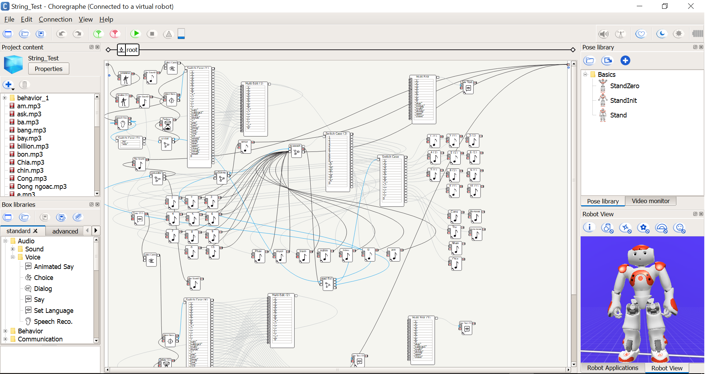

Project ideas

I am interested in Software and Robotics so my project is going to be about developing Software on Robot. I would like to create robots that can replace every job even business and doctor. If my project can be done, people working in business area or hospital do not need to spend the whole day at workplaces. By following my idea, I just not need to improve my programming skills but also electric skills and my relationship with people. To do my project, I need lots of people from many different majors working with me for sharing knowledge from their areas. After that, my team and I just need to transfer everything into algorithms and put them into robots.
There are many advantages when you create robots that replace jobs. For example: There is a robot that can build a house by putting bricks in order with the velocity 1000 bricks/hour, and one hour of the robot in action is equal to 2 days for a human (https://www.youtube.com/watch?v=INp_3qZVeyE). There are numbers of injured workers (picture below) at work which are from safeworkaustralia.com (https://www.safeworkaustralia.gov.au/). Lots of people get injured during work; the idea of creating robots is going to be useful because it helps reduce the number of injured laborers and finish work efficiently. Another advantage of creating robot is efficiency; robot can do the job accurately and finish it in the fastest way.

The robot has two important parts, hardware and software. Information technology major teaches us how to work on both sides. Hardware is an essential part because it shapes the robot, stores software inside and helps robot do the physical work. Moreover, hardware includes some parts such as central processing unit, computer data storage, motherboard and sensors…The processing abilities of robot depend on the complexity of hardware. Basically, hardware focuses too much on electrical circuits and motion joints so it requires the learners having knowledge of electricity and physics. However, I am learning to become a software engineer so what I focus is working with software. Besides the hardware of robot, software also has an important role, which is storing motions and data about robot. People studying software area not just know about programming but also have knowledge of kinematics, data design and security. The robot that I mention is the robot replacing people at some jobs such as labor; transport and security...Robots replacing laborers requires the flexibility and reliability so it can work efficiently and consistently. By creating this robot, there will be less laborers working on site, which means there will be less injured workers. Moreover, the productivity will increase. However, factories will demand a number of experienced engineers and these workers need to work nonstop to innovate robot (make it better). Robots replacing security guards is quite different because they need a lot of complicated algorithms such as algorithms about recognizing face and finger prints, algorithms of avoiding hackers and storing data. Doctor and business are 2 areas that are very difficult to be replaced because both areas need the experience, accuracy and the huge amount of knowledge. However, if robot can replace doctor, the time that patients waiting for their turn will be shortened. Moreover, robot will have the huge database (about patients and cures), the accuracy and supervision (from specialized doctors).
It will take a long time for people to have trust on robot because developers cannot make the robots perfectly in the first time; it needs to take years to test the robots in every situation. Health is an area that people mostly care about so they cannot give their life to a robot if they do not trust. Besides developing robot for hospital, there is an area that takes people lots of attention that is business or economy. Robots in this area have some functions like analytical skills, design skills and predictive skills…Moreover; business man needs to interact with these robots usually to combine their thinking and robot abilities in the first period. The abilities of business robots include analytical skills (analyzing numbers, statistics from the huge data), design skills (designing the effective economic model) and predictive skills (these functions are very useful for people working in business because they help orientate their company).
Basically, robots can just replace people at some positions of individual jobs and they still need specialists and developers to supervise and control. However, by improving robots every day, in the near future, we are going to have robots working for us with efficiency and consistency.
As I mention above, hardware has a crucial role in robot. For example: motherboard has role as processing circuit, it help carry the data and information through the software and return the results. Besides that, sensors help robot notice requirements from people and transfer them into binary numbers. Data is going to be stored into the robot or on cloud (if robot connects to the internet). Software will have roles of processing the transferred data and returning desired results. From my experience, I used to work with NAO robot and the application that I used to program the robot is Choregraphe. You can use this application for coding or Drag and Drop.
My project requires some specialized skills belonging to software and hardware
Software skills:
+ Data designing skills
+ Analytical skills
+ Programming skills
+ Evaluation skills
+ Skills to use tools
+ Search and fix bugs skills
Hardware skills:
+ Electrical skills
+ Assembly skills
+ Repair skills
To gain these skills, besides joining classes at university, you need to have working experience and study by yourself (self-learning) through many sources like online courses, books. Apart from the above skills, improving soft skills also has important role because it help you socialize and get used to working environment faster.
To conclude, if my project is successful, the rate of injured people working on site will decrease significantly and people can control robots to work from distance. Besides that, robots will finish work with efficiency and consistency and productivity will rise. Moreover, accidents by human will no longer exist and the rate of death by traffic will also drop. Furthermore, robot will be useful to space industry; it will bring people further into universe. This project will create a breakthrough in the technology world, which makes lots of workers unemployed but we are going to have a safe world and products are enough for everyone.